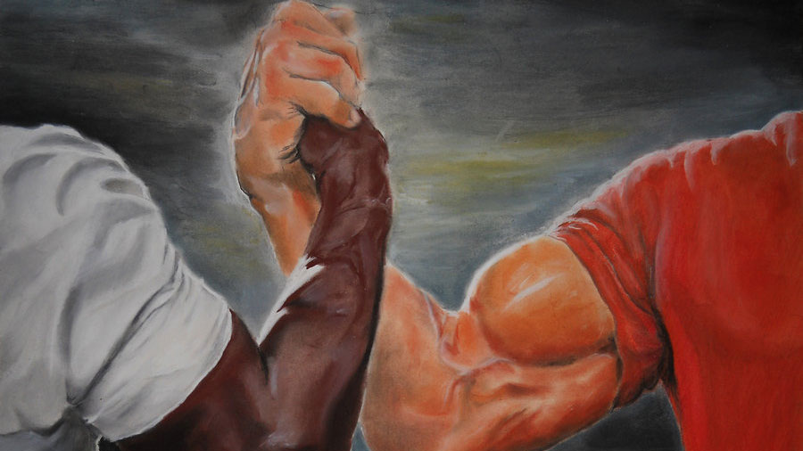

Como tudo começou?
A formação da Ordem
Em um mundo onde a escuridão e a luz se entrelaçam, um grupo inusitado de seres decidiu unir forças. A Ordem dos Guardiões da Noite foi fundada por um esqueleto sábio, chamado Ossian, e um vampiro astuto, conhecido como Vladis. Juntos, eles perceberam que a coexistência pacífica entre suas espécies era possível, desde que houvesse um equilíbrio de poder.
- 2020: Fundação da Ordem dos Guardiões da Noite.
- 2021: Lançamento do monopólio de armas contra vampiros e esqueletos.
- 2022: Início das campanhas de doação de sangue, com grande adesão da comunidade vampírica.
- 2023: Programa de adoção de esqueletos ganha destaque, promovendo a inclusão e a amizade entre as espécies.
A ideia inicial da ordem era criar um monopólio de armas contra vampiros e esqueletos, garantindo que ambos os lados estivessem protegidos de ameaças externas. Com o tempo, a ordem expandiu suas atividades, incluindo campanhas de doação de sangue para vampiros e programas de adoção de esqueletos, promovendo a aceitação e a solidariedade entre as criaturas da noite.
Trabalhos Atuais
Atualmente, a Ordem dos Guardiões da Noite se dedica a várias iniciativas. Além de continuar a produção e venda de armas, estamos focados em:
Acreditamos que, trabalhando juntos, podemos criar um futuro onde vampiros e esqueletos coexistam em harmonia, respeitando as diferenças e celebrando a diversidade. Junte-se a nós nessa jornada!
Próximos Eventos
Festival da Lua Cheia
Data: 15 de agosto de 2024
Local: Floresta Encantada
Descrição: Junte-se a nós para celebrar a Lua Cheia com danças,
música e histórias de criaturas da noite. Um evento para todas as
idades, onde vampiros e esqueletos se reúnem em harmonia.
Conferência de Coexistência
Data: 30 de setembro de 2024
Local: Centro de Convenções das Sombras
Descrição: Um encontro para discutir a importância da coexistência
entre as espécies. Especialistas e líderes da comunidade
compartilharão suas experiências e visões para o futuro.